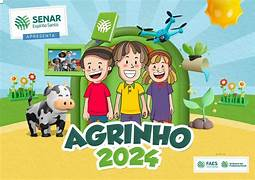

Projeto Agrinho - Campo à Cidade: Colhendo Oportunidades
Esse projeto foi desenvolvido pelo aluno da 3º Série do Colégio Estadual José Armim Matte, com o auxílio da professora de Programação, com o intuito de mostrar as oportunidades que o campo e a cidade oferecem, e também o aprendizado que tivemos durante as aulas de Programação.
Esperamos que você goste do nosso projeto e que ele possa te ajudar a encontrar a melhor oportunidade para você.
